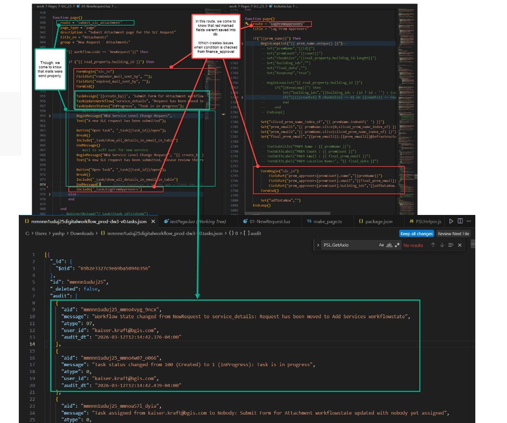

mmnnn1uduj25mmnnn1uduj25)submit_slc_attachment in 01-NewRequest.lua against audit trailreminder_mail_sent_byexpired_mail_sent_byprem_approvers[...] from LogPremApprovers also missing in DOC (matches Jira: “Prem approver’s details are missing in DOC array”)TaskUpdateWorkflow("service_details", ...) — 2026-03-12T12:14:42.376TaskUpdateStatus("InProgress", ...) — 2026-03-12T12:14:42.439kaiser.kraft@bgis.comFormBegin / FieldSet / FormEnd appear skipped / not saved?
lisa.weller@bgis.com2026-04-22T16:00:00.697-04:00task_status: 6000 (Cancelled)lisa.weller@bgis.com. Do we still need to:
FormBegin("slc_io") + FieldSet persistence vs TaskUpdate*LogPremApprovers FormBegin failed the same way
{
"aid": "mmnnn1uduj25_mmno4vyg_9ncx",
"message": "Workflow State changed from NewRequest to service_details: Request has been moved to Add Services workflowstate",
"atype": 97,
"user_id": "kaiser.kraft@bgis.com",
"audit_dt": "2026-03-12T12:14:42.376-04:00"
},
{
"aid": "mmnnn1uduj25_mmno4w07_o066",
"message": "Task status changed from 100 (Created) to 1 (InProgress): Task is in progress",
"atype": 0,
"user_id": "kaiser.kraft@bgis.com",
"audit_dt": "2026-03-12T12:14:42.439-04:00"
}
{
"aid": "mmnnn1uduj25_mnqln2wr_1dmg",
"message": "Workflow State changed from finance_approval to waiting_for_prem_approval: Task has been approved by Finance and waiting for PREM",
"atype": 97,
"user_id": "abigail.buenaobra@bgis.com",
"audit_dt": "2026-04-08T18:07:53.211-04:00"
},
{
"aid": "mmnnn1uduj25_moah8k3d_rma6",
"message": "Task status changed from 5000 (Reviewed) to 6000 (Cancelled): Task Cancelled",
"atype": 0,
"user_id": "lisa.weller@bgis.com",
"audit_dt": "2026-04-22T16:00:00.697-04:00"
}
Full JSON files are in evidence/. Reminder: prem_approvers, reminder_mail_sent_by, and
expired_mail_sent_by were not found in the task DOC array.
{kind=link}